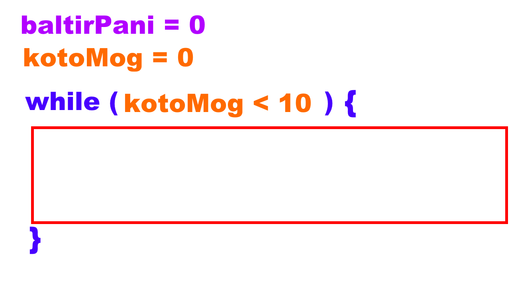
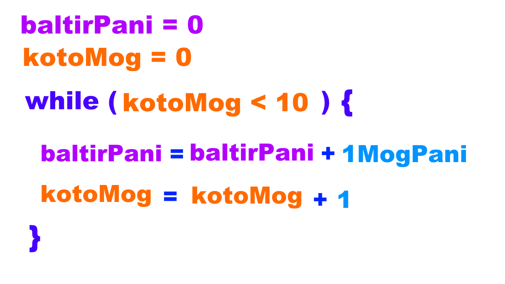
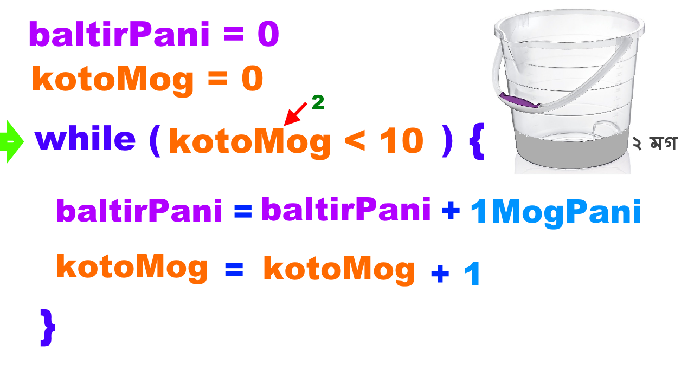
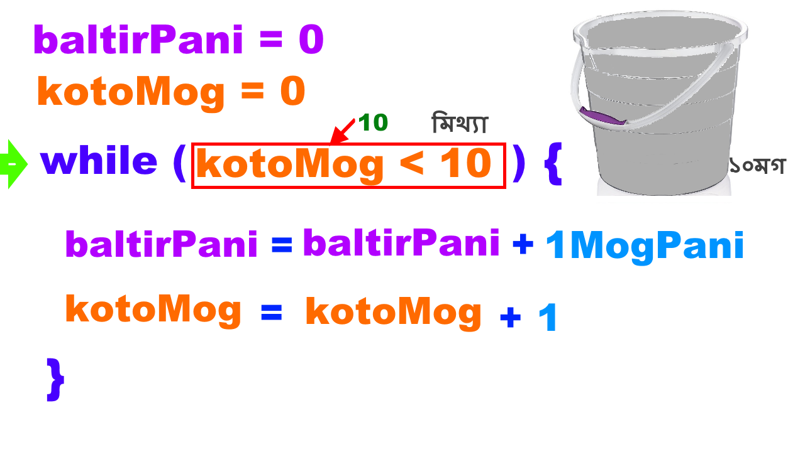
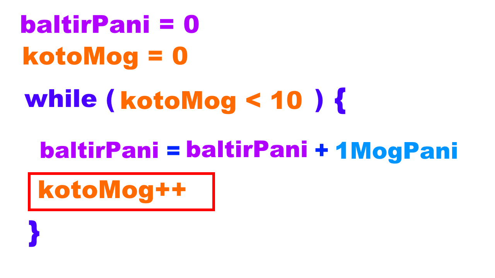

Anyone can Program
ধরুন, আপনাকে কেউ একজন একটা খালি বালতি দিয়ে বলল, “এই বালতির মধ্যে ১০ মগ পানি ঢালো।” এখন আপনি মগের মধ্যে পানি নিবেন এবং সেই পানি বালতির মধ্যে ঢালবেন। এই যে মগের মধ্যে পানি নেওয়া এবং বালতির মধ্যে ঢালা, এই কাজটা আপনি ১০ বার করবেন। এই পানি ঢালার একই কাজ আপনাকে বার বার করা লাগবে। প্রোগ্রামিং এর ক্ষেত্রে একই কাজ বার বার করতে হলে, কিন্তু আপনাকে কাজটা বার বার লিখা লাগবে না। একবার লিখলেই সেটা কিরাসমাতি করে বার বার করে ফেলতে পারবেন। এইটাই প্রোগ্রামিং এর আসল মজা। সেই মজার কাজটাই পানি ঢালতে ঢালতে আমরা করবো। চলুন দেখি কেম্নে হয়।
আপনি যদি বালতির মধ্যে প্রথম মগ পানি ঢালেন, তাহলে কত মগ পানি ঢালা হইছে সেটার মান হবে ১। আপনি যদি দ্বিতীয় মগ পানি ঢালেন, সেটা হবে ২। অর্থাৎ কত মগ পানি ঢালছেন, সেটি ভ্যারি করছে বা চেইঞ্জ হচ্ছে, তার মানে এটি একটি ভ্যারিয়েবল। সেজন্য আমরা একটি ভ্যারিয়েবল লিখলাম, kotoMog=0। আস্তে আস্তে পানি ঢালা শুরু করলে, বালতির মধ্যে পানির পরিমানও কিন্তু পরিবর্তিত বা চেঞ্জ হবে। সেজন্য, এইটাও আরেকটা ভেরিয়েবল। এইটার নাম দিলাম baltirPani এবং শুরুতে বালতি খালি থাকবে তাই বালতির পানি ভ্যারিয়েবলের ভ্যালু 0 অর্থাৎ baltirPani = 0।
আপনার সাথে কথা হয়েছে আপনি ১০ মগ পানি ঢালবেন। এই কথাটিকে যদি আমরা উলটিয়ে দেখি, তার মানে হচ্ছে আপনি ততক্ষণ পর্যন্ত পানি ঢালবেন যতক্ষণ না পর্যন্ত পানি ঢালার সংখ্যা ১০ হয়। এর মানে হচ্ছে, আপনি যে উপরে একটা ভ্যারিয়েবল দিয়েছিলেন ‘kotoMog’, সেই ভ্যারিয়েবলের মান যতক্ষণ ১০ না হয়, ততক্ষণ পর্যন্ত আপনি পানি ঢালতে থাকবেন। এই পুরো জিনিসটাকে প্রোগ্রামিংয়ের ভাষায় লিখে while কত মগ ভ্যারিয়েবলের মান ১০ এর কম ততক্ষণ পর্যন্ত এই যে আপনি ২টা সেকেন্ড ব্র্যাকেট দিয়েছেন, সেই ব্র্যাকেটের ভেতরের কাজ বা কাজগুলো আপনি করতে থাকবেন।
এই দুইটা সেকেন্ড ব্র্যাকেটের ভিতরে, আপনার প্রথম কাজটি হচ্ছে বালতির মধ্যে পানি ঢালা। আপনি যদি বালতির মধ্যে এক মগ পানি ঢালেন, তাহলে বালতির পানির পরিমাণ আগে যা ছিল, তার সাথে আরও নতুন এক মগ পানি যোগ হবে। এই জিনিসটাকেই যদি প্রোগ্রামিংয়ের ভাষায় লিখতে হয়, সেটি হবে বালতিতে আগে পানির পরিমাণ যতটুকু ছিল, ততোটুকু + ১ মগ পানি। baltirPani (পরিবর্তিত মান) = baltirPani (পূর্বের মান) + ১ মগ পানি। এরপর আপনাকে আরেকটি কাজ করতে হবে, সেটি হচ্ছে, আপনি যে হিসেব রাখতেছিলেন কত মগ পানি ঢালা হয়েছে, তার মানও কিন্তু ১ বাড়াতে হবে। তো সেটি আপনি কিভাবে লিখবেন? লিখবেন যে, কত মগ গণনা করলেন সেই সংখ্যা = কত মগের আগে যে মান ছিল তার সাথে আরও ১ যোগ করে দেবেন। অর্থাৎ kotoMog (নতুন মান) = kotoMog (পূর্বের মান ) + ১।
এখন দেখা যাক এই পুরো প্রোগ্রামটা কিভাবে কাজ করে। প্রোগ্রামটার প্রথম লাইনে এসে দেখবে, বালতির পানির পরিমাণ শূন্য, অর্থাৎ বালতিটা খালি। আর এরপর দেখবে যে গণনা বা কত মগ হয়েছে, এই ভ্যারিয়েবলের মানও শূন্য। কারণ আপ্নিও এখনও কোন পানি ঢালেননি। তারপরের লাইনে এসে দেখবে while. while এর সাথে সাথে প্রথম ব্র্যাকেটের মধ্যে একটা শর্ত থাকে। সেটা যেকোনো ধরনের শর্ত হতে পারে। তবে এই শর্তের উত্তর সত্যি বা মিথ্যা হতে হবে। এটা যদি সত্যি হয়, তাহলে সে সেকেন্ড ব্র্যাকেটের ভেতরের কাজটুকু করবে। এটা যদি মিথ্যা হয়, তাহলে করবে না। এখনো যেহেতু কোন পানি ঢালেন নাই, এই kotoMog ভ্যারিয়েবলের মান হচ্ছে শূন্য এবং সে তুলনা করে দেখবে এটি ১০ এর চেয়ে ছোট। তাই সে while এর সেকেন্ড ব্রেকেটের ভিতরের কাজগুলি করবে।
সেকেন্ড ব্র্যাকেটের ভিতরে, প্রথম লাইনের সমান চিহ্নের পর আছে বালতির পানি এবং এর বর্তমান মান শূন্য, আর এর মধ্যেই আপনি এক মগ পানি ঢাললেন। তাহলে এই লাইন শেষ হয়ে যাওয়ার পর বালতির মধ্যে পানির পরিমাণ দাঁড়াবে এক মগ। তারপর সে পরের লাইনে যাবে, সেখানে গিয়ে সমান চিহ্নের ডান পাশে দেখবে ‘kotoMog’ ভ্যারিয়েবলের মান শূন্য এবং আপনি যেহেতু এক মগ পানি ঢেলে ফেলেছেন, সেহেতু শূন্যের সাথে এক যোগ করা হবে এবং এরপর ‘kotoMog’ ভ্যারিয়েবলের মান দাঁড়াবে ‘১’। এখন while এর ভিতরের কাজ একবার করা শেষ। এই ভিতরের কাজ আবারো করা লাগবে কিনা, সেটা জানার জন্য সে আবার while এর পরে প্রথম ব্র্যাকেটের ভিতরের শর্তের কাছে যাবে। সেখানে গিয়ে দেখবে ‘kotoMog’ ভ্যারিয়েবলের মান ১ যা ১০ এর চেয়ে ছোট। অর্থাৎ শর্তের মান সত্য। তাই সে আবার while লুপের সেকেন্ড ব্র্যাকেটের মধ্যে ঢুকবে এবং সেখানে আরও এক মগ পানি যোগ করবে এবং এর ফলে বালতির মোট পানির পরিমাণ হবে ২ মগ। পরের লাইনে আসবে kotoMog’ ভ্যারিয়েবলের মান ছিল এক এবং এর সাথে আরও ১ যোগ করবে যার ফলে ‘kotoMog’ এর মান হবে ২।
এরপর সে আবার while লুপের কাছে যাবে এবং দেখবে ‘কত মগ’ এর ভ্যালু হচ্ছে ২ যা ১০ এর চেয়ে ছোট। ফলে সে ভেতরের কাজগুলো করবে। এইভাবে যতক্ষণ শর্তের মান সত্য হবে ততক্ষণ করতে থাকবে। করতে করতে যখন ‘kotoMog’ এর ভ্যালু ৯ হবে, তখনও এটি ১০ এর চেয়ে ছোট হবে এবং এটি আবার while লুপের ভেতর ঢুকবে এবং এক মগ পানি যোগ করবে। পরের লাইনে kotoMog ভ্যারিয়বলের মান এক বেড়ে হয়ে যাবে ১০। এরপর সে যখন while লুপের পরে ফার্স্ট ব্রাকেটের ভেতরের শর্তের কাছে যাবে, তখন দেখবে ‘kotoMog’ ভ্যারিয়েবলের মান ১০ এর চেয়ে ছোট না। এইটা এখন ১০ এর সমান হয়ে গেছে। এর মানে হল kotoMog < ১০ এটি মিথ্যা বা False হয়ে গিয়েছে। আমরা আগেই জেনেছি শর্ত মিথ্যা হয়ে গেলে এটি আর while লুপ এর মধ্যে সেকেন্ড ব্র্যাকেটের মধ্যে ঢুকবে না। অর্থাৎ আপনার কাজ ১০ বালতি পানি ঢালা শেষ। এর ফলে আপনি খুশি, সেইসাথে আপনার আব্বাও খুশি।
এই যে আমরা একটা while লুপ লিখলাম, এই while লুপের ভিতরে শেষ যে লাইনটি আছে, তার কাজ হচ্ছে ‘kotoMog’ নামে যে ভ্যারিয়েবল আছে, তার সাথে ১ যোগ করা। এই জিনিসটা যদি আমরা এভাবে না লিখে আরও সহজভাবে লিখতে পারি, তাহলে সেটি হবে ‘kotoMog++’। কোন একটা ভ্যারিয়েবলের পর যদি ++ চিহ্ন থাকে, তাহলে প্রোগ্রামাররা খুব সহজেই বুঝে ফেলেন যে ‘kotoMog’ ভ্যারিয়েবলের মান আগে যা ছিল, তার সাথে ১ যোগ করতে হবে।
আরেকটা কথা । আমরা kotoMog ভ্যারিয়েবল টা শুরু করছি '0' থেকে। তাই 0 থেকে ৯ পর্যন্ত কিন্তু দশটা সংখ্যা। তাই, শূন্য থেকে শুরু করে ৯ পার করলেই দশবার কাজটা আপনার করা হয়ে গেছে।
এখন আপনি while লুপ দিয়ে আপনার জানটুর জন্য ফুলদানীতে ২০টা গোলাপ ফুল রাখবেন, এই প্রোগ্রামটি লিখে কমেন্ট সেকশনে কমেন্ট করেন। সঠিক উত্তরদাতাদের মধ্য থেকে লটারির মাধ্যমে এই পর্বের জন্য সেরা একজন হাবলু নির্বাচন করা হবে।
পরবর্তী লেকচারটা জানুয়ারির প্রথম সপ্তাহে পাবেন।
যদি লোকসম্মুখে প্রশ্ন জিগ্গেস করতে বা উপদেশ, বকাঝকা, গালাগালি, হুমকি দিতে সংকোচ লাগে তাইলে ইমেইল করে দেন jhankar.mahbub@gmail.com